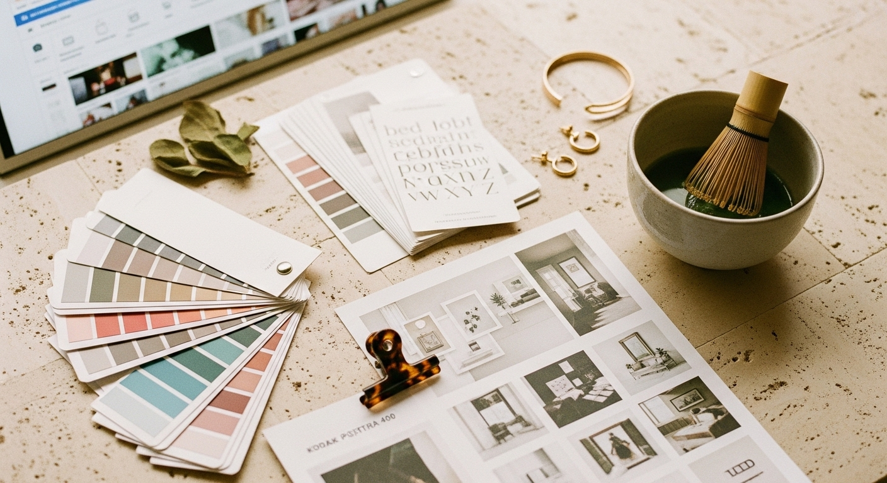

Branding for business: how to build trust before anyone contacts you

Your potential clients are making decisions about your business before they ever speak to you. They are scrolling your Instagram, landing on your website, clicking through your services page - and within seconds, they are deciding whether you look legitimate or not.
That decision has almost nothing to do with your skills or experience. It comes down to branding for business - the visual and verbal signals that tell someone whether you are worth their time. If your colors clash, your fonts are inconsistent, and your logo looks like you made it in five minutes (because you did), you are losing people before they even read a word you have written.
This is fixable. You do not need a design degree or a massive budget. You need a clear system and the willingness to apply it consistently across every platform where your business shows up.
WHAT BRANDING ACTUALLY MEANS FOR A SMALL BUSINESS
Branding is not just a logo. That is the mistake most people make - they get a logo designed, slap it on everything, and assume they are done. But branding for business is the full picture: your colors, fonts, logo, photography style, voice, and how all of those things work together to create a feeling.
Think about the businesses you trust online. Their Instagram looks cohesive. Their website feels intentional. Their emails sound like the same person wrote them. That consistency is not an accident - it is the result of having clear brand guidelines and actually using them.
When your branding is inconsistent, it creates friction. Visitors cannot quite put their finger on why, but something feels off. Maybe your website uses one color palette and your Instagram uses another. Maybe your logo looks different on every platform. Maybe your bio sounds formal but your posts sound casual. These small disconnects add up, and they erode trust before you have had a chance to earn it.
Consistent branding does the opposite. It signals that you know what you are doing. It makes your business feel established, even if you launched six months ago. It removes the mental work for your potential clients - they do not have to wonder if you are professional. They can see it.
THE FIVE ELEMENTS EVERY SMALL BUSINESS NEEDS
You do not need thirty brand assets. You need five, applied consistently everywhere your business appears online.
First, a logo that works at any size. This means it needs to be legible as a tiny favicon and clear on a business card. Most small businesses need two versions - a primary logo and a simplified mark for small spaces. If your logo only works at one size, you will end up improvising, and that improvisation creates inconsistency.
Second, a color palette. Three to five colors maximum. Pick one primary color that dominates (this becomes your signature), one or two supporting colors, and a neutral for backgrounds and text. Write down the exact hex codes and use them everywhere - website, social media, email headers, everything.
Third, fonts. Two is enough. One for headings, one for body text. More than that creates visual chaos. Choose fonts that reflect your brand's personality - clean and modern, warm and approachable, bold and confident - and stick with them.
Fourth, photography style. This matters more than most people realize. Are your images bright and airy or moody and dramatic? Do you use lifestyle photos or flat lays? Stock images or original photography? Pick a direction and stay in it. Mixing styles makes your feed look scattered.
Fifth, brand voice. This is how you sound in writing. Are you formal or conversational? Warm or direct? Playful or serious? Your captions, emails, and website copy should all sound like the same person wrote them. When your voice shifts depending on the platform, people notice - even if they cannot articulate why something feels off.
WHY DIY BRANDING FAILS (AND HOW TO DO IT PROPERLY)
Most business owners attempt branding without a system. They pick colors they like in the moment. They download fonts that look nice individually. They create graphics one at a time without any unifying guidelines. The result is a visual mess that looks accidental.
The problem is not that you are doing it yourself - it is that you are making decisions in isolation without a framework to hold them together. Every single choice needs to reference a central set of guidelines. Otherwise, your Monday Instagram post will not match your Thursday email header, and your website will feel like it belongs to a different business entirely.
The fix is simple but requires discipline. Before you create anything else, define your brand guidelines. Write down your exact colors, fonts, and logo variations. Save your approved photography style references. Document your voice - even just three bullet points about how you want to sound. Then, every time you create something new, check it against those guidelines before publishing.
This sounds tedious, but it saves time in the long run. When you have clear guidelines, you stop second-guessing every design decision. You stop spending twenty minutes choosing a color for your story graphic. You stop the cycle of making something, hating it a week later, and starting over.
If you want a done-for-you version, the [Switzertemplates 3-in-1 business bundle](https://switzertemplates.etsy.com) includes a full branding kit, a Wix website, and a Canva landing page - all designed to work together so your business looks consistent from day one.
HOW BRANDING BUILDS TRUST BEFORE THE FIRST CONVERSATION
Trust is the foundation of every sale. Before someone books a call, buys a product, or hires you for a service, they need to believe you are credible. And credibility, online, is almost entirely visual - at least at first.
Consider how you evaluate businesses you have never worked with. You check their website. You scroll their Instagram. You read a few testimonials. Within thirty seconds, you have formed an impression. That impression is based almost entirely on how things look and feel - not on the actual quality of the work, because you have not experienced that yet.
This is not superficial. This is how humans process information. We use visual cues as shortcuts for trustworthiness because we cannot possibly research every business in depth. If your branding looks thrown together, visitors assume your services might be the same. If your branding looks polished and intentional, they assume you bring that same care to your work.
Strong branding for business does not manipulate people - it accurately signals your professionalism. It removes the friction between someone finding you and someone trusting you enough to take the next step.
APPLYING YOUR BRANDING ACROSS EVERY PLATFORM
Having brand guidelines is useless if you do not apply them consistently. This is where most small businesses fall apart - they create a beautiful brand kit and then ignore it half the time.
Your website is the foundation. Every color, font, and image on your site should align with your brand guidelines. No exceptions. This is the one platform you fully control, so there is no excuse for inconsistency here.
Your Instagram needs to match your website. That does not mean every post looks identical - it means the overall feed feels cohesive. Same color palette. Same fonts on graphics. Same photography style. When someone clicks from your Instagram to your website, there should be zero visual whiplash.
Your email headers and templates should use the same colors and fonts. Your lead magnets and PDFs should look like they came from the same business as your website. Your Pinterest pins should be recognizable as yours even without your logo visible.
This level of consistency requires a system. Create templates for your most common content types - Instagram posts, story graphics, email headers, Pinterest pins - and reuse them. When everything shares the same underlying structure, consistency becomes automatic instead of exhausting.
COMMON BRANDING MISTAKES THAT COST YOU CLIENTS
The most expensive branding mistake is inconsistency. It is also the most common. You pick a new color because you are bored of the old one. You try a trendy font because everyone else is using it. You switch up your photography style because you saw something you liked. Each individual change seems small, but collectively, they destroy the cohesion that makes branding work.
The second mistake is choosing trends over longevity. That trendy color palette or font style will look dated in eighteen months. Classic choices - clean fonts, timeless colors, simple layouts - age much better. You want branding that still works in three years, not branding you will want to redo next quarter.
The third mistake is overcomplicating everything. Five colors, four fonts, three logo variations, twelve different graphic styles. It is too much to manage, and the result is chaos. Simpler branding is easier to apply consistently, which means you will actually use it.
The fourth mistake is copying your competitors exactly. You look at a successful business in your niche, assume their branding is why they are successful, and replicate it. Now you look like a knockoff instead of an original. Study what works about their branding - the consistency, the clarity, the professionalism - and apply those principles to something that is distinctly yours.
THE RELATIONSHIP BETWEEN BRANDING AND BUSINESS GROWTH
Strong branding for business is not a vanity project. It directly impacts your ability to attract clients, charge higher prices, and build long-term recognition.
When your branding is consistent and professional, you can charge more. This is not a theory - it is basic psychology. People pay premium prices for things that look premium. If your branding looks cheap, clients will expect cheap prices. If your branding looks polished, clients expect (and accept) higher rates.
Strong branding also makes marketing easier. When you have clear templates and guidelines, creating content takes less time. You stop agonizing over colors and fonts for every post. You stop recreating graphics from scratch. You build a library of branded assets that you can reuse and repurpose, which frees up time for the work that actually generates revenue.
Recognition compounds over time. Every time someone sees your branded content, they are building a mental association with your business. After enough exposures, they start to recognize your posts before they even see your name. That recognition is valuable - it turns cold audiences into warm leads and warm leads into buyers.
Branding for business is a long-term investment. The work you put in now pays dividends for years, as long as you stay consistent.
You do not need to hire an expensive agency or spend months on this. You need clear guidelines, simple systems, and the discipline to apply them everywhere your business shows up. Start with the five elements - logo, colors, fonts, photography style, and voice. Document them. Create templates. Use them consistently. ✅
The businesses that look professional online are not doing anything complicated. They are just applying simple principles consistently while everyone else keeps improvising.
If you want everything set up and ready to customize, 📥 browse the full collection of branding kits and website templates at the [Switzertemplates Etsy shop](https://switzertemplates.etsy.com) - designed for coaches, consultants, and service providers who want to look established without starting from scratch.
Let me know in the comments below if you want me to cover any branding or marketing topics in more depth, and I'll make sure to create a blog post about it in the future.